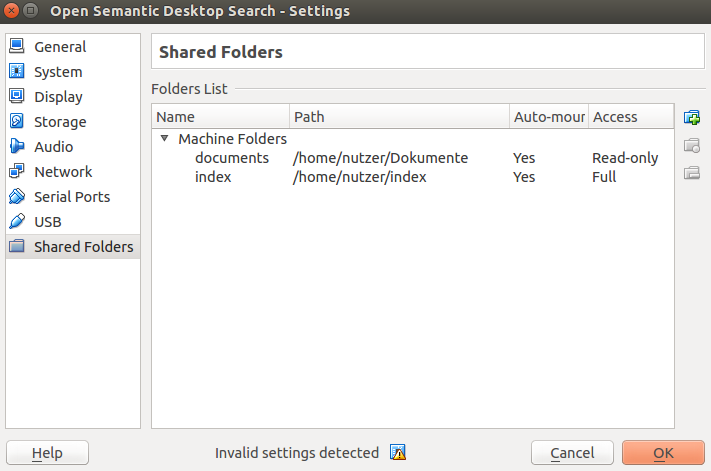

How to install Open Semantic Desktop Search
Dependencies
If not yet there download and install the following virtual machine host (available for free for Windows, Mac and Linux)
Installation
- Download the virtual machine image Open Semantic Desktop Search
- Start Virtual Box
- In the menu "File" start the option "Import Appliance".
- Choose the downloaded appliance file and start the import
Configuration of document folders
Edit the settings of the new virtual machine (choose the virtual machine in the left sidebar and click the "settings" button in the top bar).
Add shared folders with documents:

You can add one shared folder or multiple shared folders pointing to local folders on your harddisk to point to your documents, that should be indexed, searched and analysed.
Activate the option Auto-mount.
This folder(s) can be set read only, so you cannot accidently delete important documents because not familiar with the new user interfaces and desktop environment.
Automatic indexing of new documents on virtual machine startup
On startup of the virtual machine all (new) documents in the configured shared folders will be indexed.
Desktop search usage
After the files have been indexed you can search and analyse documents with Open Semantic Desktop Search.
External index (optionally)
If you want to store the index in a directory or filesystem outside the Virtual Machine, because the default size of the image is too small for your index, you can add a shared folder named index (activate the option Auto-mount).
Don't set this folder to read only, since the search engine has to store the index in it.
System access and default passwords
User
The default password of the default user is empty and the GUI is configured for automatic login.
Root access
If you want full root access to the Linux System, for example to install additional packages or to change config files:
Since as admin you have control of the virtual machine host and you have full access to the virtual machines data and so there is no root password.
Terminal
So in the terminal app you can get full root access by following command:
su
Console
Or just login as root without password on the virtual machine console:
Press CTRL-Right and F3 at once to get to the console.
Login as root without password.
Set a root password:
passwd
Exit the console:
exit
Return to Gnome GUI:
Press CTRL-Right and F2 at once.